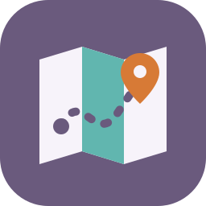

Learning
Local appletExplore a topic with an AI guide and keep track of what you learn.
Apell
Apell runs installable applets on iOS, Android, and macOS. Set up your model providers once and keep each applet's local data private.
A few applets to make yourself at home.

Chat with your models. Bring images and audio along.
Explore CompanionRead papers, discuss a passage, and keep your notes close.
View releaseBrowse remote agent sessions and message supported live sessions.
View release
Explore a topic with an AI guide and keep track of what you learn.

Record audio, organize voice notes, and transcribe on device.

Keep trips, photos, and places together in a personal travel journal.
Package a web frontend with a manifest and an optional Rust WebAssembly backend. Use Apell's APIs for model access, storage, and device capabilities.
manifest.jsonindex.htmlassets/lib/main.wasmoptional backend